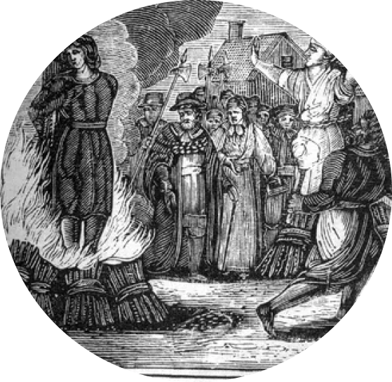

Церковная власть становиться сильной, как никогда. Началась, так называемая, охота на ведьм. Церковь обвиняла людей, в основном рыжих девушек, в пособничестве дьяволу. Множество невинных погибло в то время, например Коперник. Его идеи опережали свое время, и были признаны несоответсвующими представлению мира со стороны верующих.
Религия
Одна из самых запоминающихся историх охоты на ведьм была в городе Салем. 10 июня 1692 года в деревне Салем повесили первую жертву охоты на ведьм. За 14 месяцев — с января 1692 года по май 1693-го — обвинения в колдовстве были предъявлены 172 мужчинам и женщинам из всех слоев общества. До сих пор эта история поражает своей жестокостью современностью.